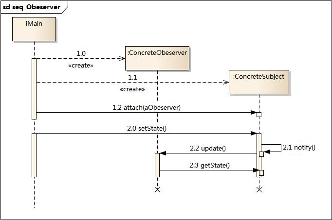

3. 观察者模式¶
3.1. 模式动机¶
建立一种对象与对象之间的依赖关系，一个对象发生改变时将自动通知其他对象，其他对象将相应做出反应。在此，发生改变的对象称为观察目标，而被通知的对象称为观察者，一个观察目标可以对应多个观察者，而且这些观察者之间没有相互联系，可以根据需要增加和删除观察者，使得系统更易于扩展，这就是观察者模式的模式动机。
3.2. 模式定义¶
观察者模式(Observer Pattern)：定义对象间的一种一对多依赖关系，使得每当一个对象状态发生改变时，其相关依赖对象皆得到通知并被自动更新。观察者模式又叫做发布-订阅（Publish/Subscribe）模式、模型-视图（Model/View）模式、源-监听器（Source/Listener）模式或从属者（Dependents）模式。
观察者模式是一种对象行为型模式。
3.3. 模式结构¶
观察者模式包含如下角色：
Subject: 目标
ConcreteSubject: 具体目标
Observer: 观察者
ConcreteObserver: 具体观察者

3.4. 时序图¶
3.5. 代码分析¶
1#include <iostream>
2#include "Subject.h"
3#include "Obeserver.h"
4#include "ConcreteObeserver.h"
5#include "ConcreteSubject.h"
6
7using namespace std;
8
9int main(int argc, char *argv[])
10{
11 Subject * subject = new ConcreteSubject();
12 Obeserver * objA = new ConcreteObeserver("A");
13 Obeserver * objB = new ConcreteObeserver("B");
14 subject->attach(objA);
15 subject->attach(objB);
16
17 subject->setState(1);
18 subject->notify();
19
20 cout << "--------------------" << endl;
21 subject->detach(objB);
22 subject->setState(2);
23 subject->notify();
24
25 delete subject;
26 delete objA;
27 delete objB;
28
29 return 0;
30}
1///////////////////////////////////////////////////////////
2// Subject.h
3// Implementation of the Class Subject
4// Created on: 07-十月-2014 23:00:10
5// Original author: cl
6///////////////////////////////////////////////////////////
7
8#if !defined(EA_61998456_1B61_49f4_B3EA_9D28EEBC9649__INCLUDED_)
9#define EA_61998456_1B61_49f4_B3EA_9D28EEBC9649__INCLUDED_
10
11#include "Obeserver.h"
12#include <vector>
13using namespace std;
14
15class Subject
16{
17
18public:
19 Subject();
20 virtual ~Subject();
21 Obeserver *m_Obeserver;
22
23 void attach(Obeserver * pObeserver);
24 void detach(Obeserver * pObeserver);
25 void notify();
26
27 virtual int getState() = 0;
28 virtual void setState(int i)= 0;
29
30private:
31 vector<Obeserver*> m_vtObj;
32
33};
34#endif // !defined(EA_61998456_1B61_49f4_B3EA_9D28EEBC9649__INCLUDED_)
1///////////////////////////////////////////////////////////
2// Subject.cpp
3// Implementation of the Class Subject
4// Created on: 07-十月-2014 23:00:10
5// Original author: cl
6///////////////////////////////////////////////////////////
7
8#include "Subject.h"
9
10Subject::Subject(){
11
12}
13
14Subject::~Subject(){
15
16}
17
18void Subject::attach(Obeserver * pObeserver){
19 m_vtObj.push_back(pObeserver);
20}
21
22void Subject::detach(Obeserver * pObeserver){
23 for(vector<Obeserver*>::iterator itr = m_vtObj.begin();
24 itr != m_vtObj.end(); itr++)
25 {
26 if(*itr == pObeserver)
27 {
28 m_vtObj.erase(itr);
29 return;
30 }
31 }
32}
33
34void Subject::notify(){
35 for(vector<Obeserver*>::iterator itr = m_vtObj.begin();
36 itr != m_vtObj.end();
37 itr++)
38 {
39 (*itr)->update(this);
40 }
41}
1///////////////////////////////////////////////////////////
2// Obeserver.h
3// Implementation of the Class Obeserver
4// Created on: 07-十月-2014 23:00:10
5// Original author: cl
6///////////////////////////////////////////////////////////
7
8#if !defined(EA_2C7362B2_0B22_4168_8690_F9C7B76C343F__INCLUDED_)
9#define EA_2C7362B2_0B22_4168_8690_F9C7B76C343F__INCLUDED_
10
11class Subject;
12
13class Obeserver
14{
15
16public:
17 Obeserver();
18 virtual ~Obeserver();
19 virtual void update(Subject * sub) = 0;
20};
21#endif // !defined(EA_2C7362B2_0B22_4168_8690_F9C7B76C343F__INCLUDED_)
1///////////////////////////////////////////////////////////
2// ConcreteObeserver.h
3// Implementation of the Class ConcreteObeserver
4// Created on: 07-十月-2014 23:00:09
5// Original author: cl
6///////////////////////////////////////////////////////////
7
8#if !defined(EA_7B020534_BFEA_4c9e_8E4C_34DCE001E9B1__INCLUDED_)
9#define EA_7B020534_BFEA_4c9e_8E4C_34DCE001E9B1__INCLUDED_
10#include "Obeserver.h"
11#include <string>
12using namespace std;
13
14class ConcreteObeserver : public Obeserver
15{
16
17public:
18 ConcreteObeserver(string name);
19 virtual ~ConcreteObeserver();
20 virtual void update(Subject * sub);
21
22private:
23 string m_objName;
24 int m_obeserverState;
25};
26#endif // !defined(EA_7B020534_BFEA_4c9e_8E4C_34DCE001E9B1__INCLUDED_)
1///////////////////////////////////////////////////////////
2// ConcreteObeserver.cpp
3// Implementation of the Class ConcreteObeserver
4// Created on: 07-十月-2014 23:00:09
5// Original author: cl
6///////////////////////////////////////////////////////////
7
8#include "ConcreteObeserver.h"
9#include <iostream>
10#include <vector>
11#include "Subject.h"
12using namespace std;
13
14ConcreteObeserver::ConcreteObeserver(string name){
15 m_objName = name;
16}
17
18ConcreteObeserver::~ConcreteObeserver(){
19
20}
21
22void ConcreteObeserver::update(Subject * sub){
23 m_obeserverState = sub->getState();
24 cout << "update oberserver[" << m_objName << "] state:" << m_obeserverState << endl;
25}
运行结果：

3.6. 模式分析¶
观察者模式描述了如何建立对象与对象之间的依赖关系，如何构造满足这种需求的系统。
这一模式中的关键对象是观察目标和观察者，一个目标可以有任意数目的与之相依赖的观察者，一旦目标的状态发生改变，所有的观察者都将得到通知。
作为对这个通知的响应，每个观察者都将即时更新自己的状态，以与目标状态同步，这种交互也称为发布-订阅(publishsubscribe)。目标是通知的发布者，它发出通知时并不需要知道谁是它的观察者，可以有任意数目的观察者订阅它并接收通
知。
3.7. 实例¶
3.8. 优点¶
观察者模式的优点
观察者模式可以实现表示层和数据逻辑层的分离，并定义了稳定的消息更新传递机制，抽象了更新接口，使得可以有各种各样不同的表示层作为具体观察者角色。
观察者模式在观察目标和观察者之间建立一个抽象的耦合。
观察者模式支持广播通信。
观察者模式符合“开闭原则”的要求。
3.9. 缺点¶
观察者模式的缺点
如果一个观察目标对象有很多直接和间接的观察者的话，将所有的观察者都通知到会花费很多时间。
如果在观察者和观察目标之间有循环依赖的话，观察目标会触发它们之间进行循环调用，可能导致系统崩溃。
观察者模式没有相应的机制让观察者知道所观察的目标对象是怎么发生变化的，而仅仅只是知道观察目标发生了变化。
3.10. 适用环境¶
在以下情况下可以使用观察者模式：
一个抽象模型有两个方面，其中一个方面依赖于另一个方面。将这些方面封装在独立的对象中使它们可以各自独立地改变和复用。
一个对象的改变将导致其他一个或多个对象也发生改变，而不知道具体有多少对象将发生改变，可以降低对象之间的耦合度。
一个对象必须通知其他对象，而并不知道这些对象是谁。
需要在系统中创建一个触发链，A对象的行为将影响B对象，B对象的行为将影响C对象……，可以使用观察者模式创建一种链式触发机制。
3.11. 模式应用¶
观察者模式在软件开发中应用非常广泛，如某电子商务网站可以在执行发送操作后给用户多个发送商品打折信息，某团队战斗游戏中某队友牺牲将给所有成员提示等等，凡是涉及到一对一或者一对多的对象交互场景都可以使用观察者模式。
3.12. 模式扩展¶
MVC模式
MVC模式是一种架构模式，它包含三个角色：模型(Model)，视图(View)和控制器(Controller)。观察者模式可以用来实现MVC模式，观察者模式中的观察目标就是MVC模式中的模型(Model)，而观察者就是MVC中的视图(View)，控制器(Controller)充当两者之间的中介者(Mediator)。当模型层的数据发生改变时，视图层将自动改变其显示内容。
3.13. 总结¶
观察者模式定义对象间的一种一对多依赖关系，使得每当一个对象状态发生改变时，其相关依赖对象皆得到通知并被自动更新。观察者模式又叫做发布-订阅模式、模型-视图模式、源-监听器模式或从属者模式。观察者模式是一种对象行为型模式。
观察者模式包含四个角色：目标又称为主题，它是指被观察的对象；具体目标是目标类的子类，通常它包含有经常发生改变的数据，当它的状态发生改变时，向它的各个观察者发出通知；观察者将对观察目标的改变做出反应；在具体观察者中维护一个指向具体目标对象的引用，它存储具体观察者的有关状态，这些状态需要和具体目标的状态保持一致。
观察者模式定义了一种一对多的依赖关系，让多个观察者对象同时监听某一个目标对象，当这个目标对象的状态发生变化时，会通知所有观察者对象，使它们能够自动更新。
观察者模式的主要优点在于可以实现表示层和数据逻辑层的分离，并在观察目标和观察者之间建立一个抽象的耦合，支持广播通信；其主要缺点在于如果一个观察目标对象有很多直接和间接的观察者的话，将所有的观察者都通知到会花费很多时间，而且如果在观察者和观察目标之间有循环依赖的话，观察目标会触发它们之间进行循环调用，可能导致系统崩溃。
观察者模式适用情况包括：一个抽象模型有两个方面，其中一个方面依赖于另一个方面；一个对象的改变将导致其他一个或多个对象也发生改变，而不知道具体有多少对象将发生改变；一个对象必须通知其他对象，而并不知道这些对象是谁；需要在系统中创建一个触发链。
在JDK的java.util包中，提供了Observable类以及Observer接口，它们构成了Java语言对观察者模式的支持。